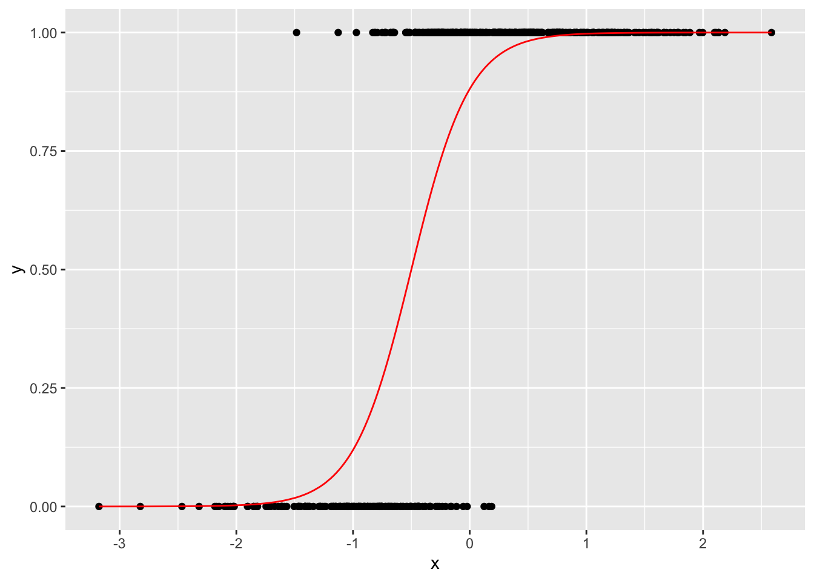
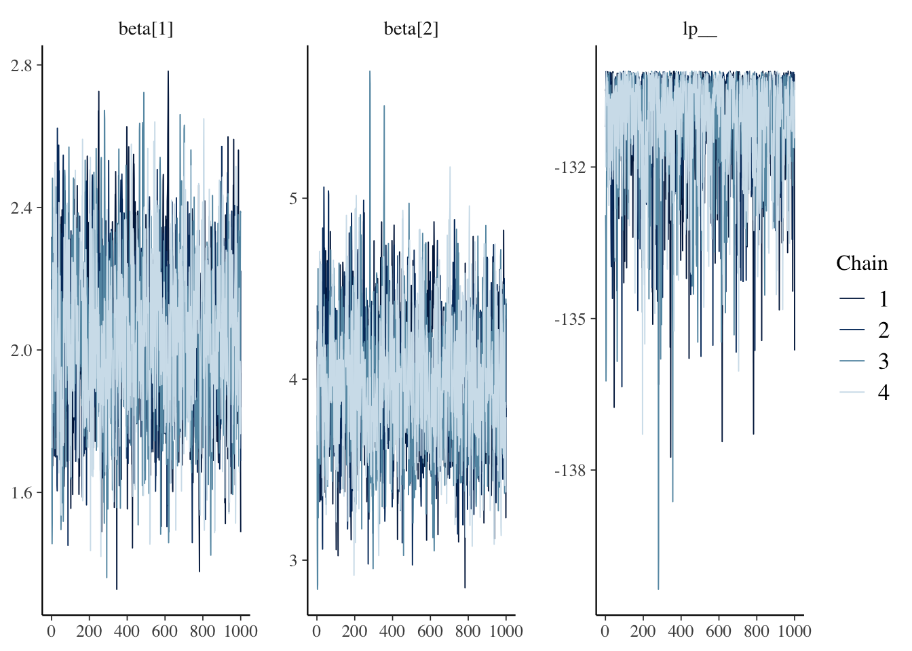
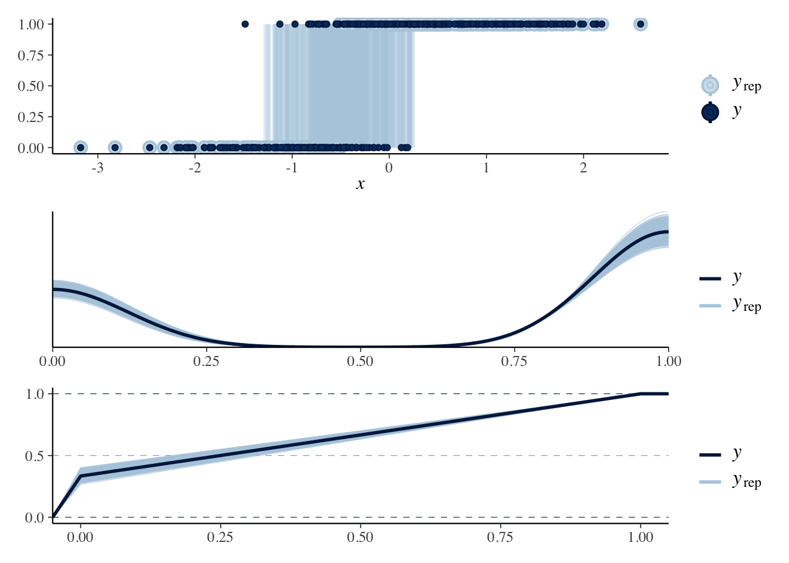

Chapter32 Day 32
library(tidyverse)
library(fields)
library(viridis)
library(mvnfast)
library(igraph)
library(Matrix)
library(patchwork)
library(mgcv)
library(rstan)
library(nimble)
## use recommended rstan settings
options(mc.cores = parallel::detectCores())
rstan_options(auto_write = TRUE)
library(bayesplot)
set.seed(101)32.1 Announcements
32.2 Generalized (non-Gaussian) spatial models
Many interesting datasets are non-Gaussian
Examples:
environmental monitoring through presence/absence data (binary data)
a researcher visits a site \(\mathbf{s}\) and records if the species of interest is present \(y(\mathbf{s}) = 1\) or absent \(y(\mathbf{s}) = 0\)
crowd size estimation (count data)
a researcher wants to determine the total crowd size so she divides the spatial domain into regions \(\mathcal{A} = \{ A_1, \ldots, A_n\}\), samples a few of the regions, and counts the number of people \(\mathbf{y}_i = \{0, 1, 2, \ldots \}\) in each area. Then, she predicts the counts at unobserved locations to estimate total crowd size.
For multivariate normal data, the spatial correlation is easy to incorporate
More challenging for non-Gaussian data
Recall the Gaussian model:
\[\begin{align*} y(\mathbf{s}) | \eta(\mathbf{s}) & \stackrel{iid}{\sim} N(\mathbf{X}(\mathbf{s}) \boldsymbol{\beta} + \eta(\mathbf{s}), \sigma^2) \\ \boldsymbol{\eta} = (\eta(\mathbf{s}_1), \ldots, \eta(\mathbf{s}_n))' & \sim N(\mathbf{0}, \boldsymbol{\Sigma}), \end{align*}\]
where \(\boldsymbol{\Sigma}\) is the covariance matrix for the covariance function \(\tau^2 \mathbf{C}(\| \mathbf{s} - \mathbf{s}' \|)\).
If we integrate out the random effect \(\boldsymbol{\eta}\) we have:
\(y(\mathbf{s})\) is a GP
\(E\left( y \left( \mathbf{s} \right) \right) = \mathbf{X}(\mathbf{s}) \boldsymbol{\beta}\)
\(Cov(y(\mathbf{s}), y(\mathbf{s}')) = \begin{cases} \sigma^2 + \tau^2 & h = 0 \\ \tau^2 C (h) & h > 0 \end{cases}\)
Therefore, given the random effects, the observations are independent, but marginally, the observations are dependent.
Instead, for spatial GLMs we add latent Gaussian random effects to the generalized linear model
32.3 Generalized linear models (GLMs) for non-spatial data
- Primary idea: model
\[\begin{align*} g \left( E \left( y_i \right) \right) & = \mathbf{X}_i \boldsymbol{\beta} \end{align*}\]
for some link function \(g(\cdot)\)
What about a nugget?
It is possible to include a nugget. If you include a nugget, you end up with an over-dispersed (higher variance) marginal model because there is already variance due to the distribution tied to the link function.
32.3.1 Example: binary (logistic) regression
\(y_i = \{0, 1\}\)
\(E \left( y_i \right) = p_i\)
the link function is \(p_i = logit \left( E \left( y_i \right) \right) = logit \left( \operatorname{Prob} \left( y_i = 1 \right) \right) = \mathbf{X}_i \boldsymbol{\beta}\)
the logit function is \(logit(z) = \frac{e^z}{1 + e^z}\)
sometimes a probit link function is used \(p_i = probit \left( E \left( y_i \right) \right) = probit \left( \operatorname{Prob} \left( y_i = 1 \right) \right) = \mathbf{X}_i \boldsymbol{\beta}\)
the probit function is \(probit(z) = \Phi(z)\) where \(\Phi()\) is the standard normal CDF
n <- 500
X <- cbind(1, rnorm(n))
beta <- c(2, 4)
logit <- function(x) exp(x) / (1 + exp(x))
p <- logit(X %*% beta)
y <- rbinom(n, 1, p)
data.frame(x = X[, 2], y = y, p = p) %>%
ggplot(aes(x = x, y = y)) +
geom_point() +
geom_line(aes(x = x, y = p), col = "red")
## fit logistic regression using mgcv
mod <- gam(y ~ X - 1, family = binomial(link = "logit"))
summary(mod)##
## Family: binomial
## Link function: logit
##
## Formula:
## y ~ X - 1
##
## Parametric coefficients:
## Estimate Std. Error z value Pr(>|z|)
## X1 2.4540 0.2764 8.877 <2e-16 ***
## X2 4.7980 0.4861 9.871 <2e-16 ***
## ---
## Signif. codes: 0 '***' 0.001 '**' 0.01 '*' 0.05 '.' 0.1 ' ' 1
##
##
## R-sq.(adj) = 0.67 Deviance explained = 62.8%
## UBRE = -0.51829 Scale est. = 1 n = 50032.3.1.1 Binary logistic regression in stan
we need to define a stan model
create a stan model in a folder named
stan_modelsin the Rstudio project folderprint the output of the model
logistic-regression.stan
data {
int<lower=0> n;
int<lower=0> p;
int<lower=0,upper=1> y[n];
matrix[n, p] X;
}
parameters {
vector[p] beta;
}
model {
y ~ bernoulli_logit(X * beta);
beta ~ normal(0, 1);
}
generated quantities {
int y_rep[n];
y_rep = bernoulli_logit_rng(X * beta);
}
// Note: the stan file must end in a blank (new) line- Fitting the model
if (file.exists("./results/logistic-regression.RData")) {
load("./results/logistic-regression.RData")
} else {
fit <- stan(
file = "./stan_models/logistic-regression.stan",
data = list(y = y, n = n, X = X, p = ncol(X)),
iter = 2000
)
save(fit, file = "./results/logistic-regression.RData")
}## Inference for Stan model: logistic-regression.
## 4 chains, each with iter=2000; warmup=1000; thin=1;
## post-warmup draws per chain=1000, total post-warmup draws=4000.
##
## mean se_mean sd 10% 90% n_eff Rhat
## beta[1] 2.04 0.01 0.21 1.77 2.31 1348 1
## beta[2] 3.98 0.01 0.35 3.54 4.44 1323 1
## lp__ -131.11 0.03 1.03 -132.41 -130.21 1433 1
##
## Samples were drawn using NUTS(diag_e) at Sun Nov 7 14:37:26 2021.
## For each parameter, n_eff is a crude measure of effective sample size,
## and Rhat is the potential scale reduction factor on split chains (at
## convergence, Rhat=1).
Posterior predictive checks
p1 <- ppc_intervals(y, y_rep, x = X[, 2])
p2 <- ppc_dens_overlay(y, y_rep)
p3 <- ppc_ecdf_overlay(y, y_rep)
p1 / p2 / p3
32.3.1.2 Binary logistic regression in NIMBLE
- we need to define a nimble model
logistic_code <- nimbleCode({
## prior for regression parameters beta
for (j in 1:q) {
beta[j] ~ dnorm(0, sd = 10)
}
for (i in 1:n) {
## note that you have to be explicit about the variable
## dimensions for each statement
logit(p[i]) <- X[i, 1:q] %*% beta[1:q]
y[i] ~ dbin(p[i], m[i])
}
})
## define the constants, data, and MCMC initial conditions
constants <- list(n = n)
data <- list(
y = y,
m = rep(1, n),
X = X,
q = ncol(X)
)
inits <- list(beta = rnorm(ncol(X)), p = rbeta(n, 1, 1))
## create the NIMBLE model
logistic_model <- nimbleModel(
code = logistic_code,
constants = constants,
data = data,
inits = inits
)## Defining model## Error in getSymbolicParentNodesRecurse(x, constNames, indexNames, nimbleFunctionNames, : Dynamic indexing found in a vector of indices, 1:q. Only scalar indices, such as 'idx' in 'x[idx]', can be dynamic. One can instead use dynamic indexing in a vector of indices inside a nimbleFunction.Note the above error – it’s saying that q needs to be specified as a constant rather than data.
## define the constants, data, and MCMC initial conditions
constants <- list(n = n, q = ncol(X))
data <- list(
y = y,
m = rep(1, n),
X = X
)
inits <- list(beta = rnorm(ncol(X)), p = rbeta(n, 1, 1))
## create the NIMBLE model
logistic_model <- nimbleModel(
code = logistic_code,
constants = constants,
data = data,
inits = inits
)## Defining model## Building model## Setting data and initial values## Running calculate on model
## [Note] Any error reports that follow may simply reflect missing values in model variables.## Checking model sizes and dimensions- Next, we build a default MCMC algorithm
## ===== Monitors =====
## thin = 1: beta
## ===== Samplers =====
## RW sampler (2)
## - beta[] (2 elements)We can run the algorithm in R code using
## Warning: running an uncompiled MCMC algorithm, use compileNimble() for faster execution.## running chain 1...## beta[1] beta[2]
## [1,] 0.7073565 2.115559
## [2,] 1.5108923 2.354097
## [3,] 1.5108923 3.317967
## [4,] 1.5108923 3.317967
## [5,] 1.5108923 3.317967
## [6,] 1.5108923 3.317967
## [7,] 1.5070121 3.317967
## [8,] 1.4636310 3.317967
## [9,] 2.0753124 3.317967
## [10,] 2.0753124 3.317967but this is slow. Instead, we compile the model to c++ for faster runtimes
## Compiling
## [Note] This may take a minute.
## [Note] Use 'showCompilerOutput = TRUE' to see C++ compilation details.## Warning, in eigenizing model_p[getNodeFunctionIndexedInfo(ARG1_INDEXEDNODEINFO__,1)] the [ is still there but nDim is not 0 (not a scalar).## Error: Failed to create the shared library. Run 'printErrors()' to see the compilation errors.## Compiling
## [Note] This may take a minute.
## [Note] Use 'showCompilerOutput = TRUE' to see C++ compilation details.## Error: Compiled C++ model not available; please include the model in your compilation call (or compile it in advance).but we get some errors. A quick Google search [nimble Warning, in eigenizing model_p[getNodeFunctionIndexedInfo(ARG1_INDEXEDNODEINFO__,1)] the is still there but nDim is not 0 (not a scalar). led me to this site that suggests the problem is that the output of X[i, 1:q] %*% beta[1:q] is a matrix but the logit link function needs a scalar. This is some of the “immaturity” I talk about with NIMBLE that makes it sometimes challenging to get started with. Instead, we replace the X[i, 1:q] %*% beta[1:q] with the inner product inprod(X[i, 1:q], beta[1:q]) in the model statement
logistic_code <- nimbleCode({
## prior for regression parameters beta
for (j in 1:q) {
beta[j] ~ dnorm(0, sd = 10)
}
for (i in 1:n) {
## note that you have to be explicit about the variable
## dimensions for each statement
logit(p[i]) <- inprod(X[i, 1:q], beta[1:q])
y[i] ~ dbin(p[i], m[i])
}
})
## define the constants, data, and MCMC initial conditions
constants <- list(n = n, q = ncol(X))
data <- list(
y = y,
m = rep(1, n),
X = X
)
inits <- list(beta = rnorm(ncol(X)), p = rbeta(n, 1, 1))
## create the NIMBLE model
logistic_model <- nimbleModel(
code = logistic_code,
constants = constants,
data = data,
inits = inits
)## Defining model## Building model## Setting data and initial values## Running calculate on model
## [Note] Any error reports that follow may simply reflect missing values in model variables.## Checking model sizes and dimensions## I need the additional option to change my c++ compiler flags when both stan and nimble are loaded
Sys.unsetenv("PKG_CXXFLAGS")
logistic_mcmc <- buildMCMC(logistic_model)## ===== Monitors =====
## thin = 1: beta
## ===== Samplers =====
## RW sampler (2)
## - beta[] (2 elements)## Compiling
## [Note] This may take a minute.
## [Note] Use 'showCompilerOutput = TRUE' to see C++ compilation details.## Compiling
## [Note] This may take a minute.
## [Note] Use 'showCompilerOutput = TRUE' to see C++ compilation details.- once the model is compiled, we fit this using
runMCMC
# if (file.exists("./results/logistic-regression-nimble.RData")) {
# load("./results/logistic-regression-nimble.RData")
# } else {
samples <- runMCMC(logistic_mcmc_c, niter = 1000, nchains = 4)## running chain 1...## |-------------|-------------|-------------|-------------|
## |-------------------------------------------------------|## running chain 2...## |-------------|-------------|-------------|-------------|
## |-------------------------------------------------------|## running chain 3...## |-------------|-------------|-------------|-------------|
## |-------------------------------------------------------|## running chain 4...## |-------------|-------------|-------------|-------------|
## |-------------------------------------------------------|and examine the traceplots with
layout(matrix(1:2, 2, 1))
plot(samples[[1]][, "beta[1]"], col = 1, type = 'l', main = "beta_0")
for (i in 2:4) {
lines(samples[[i]][, "beta[1]"], col = i, type = 'l')
}
plot(samples[[1]][, "beta[2]"], col = 1, type = 'l', main = "beta_1")
for (i in 2:4) {
lines(samples[[i]][, "beta[2]"], col = i, type = 'l')
}
32.3.2 Example: Poisson (count) regression
\(y_i = \{0, 1, 2, \ldots \}\)
\(E \left( y_i \right) = \lambda_i\)
the link function is \(\log( \lambda_i) = log \left( E \left( y_i \right) \right) = \mathbf{X}_i \boldsymbol{\beta}\)
Marginal distriubtion of \(y(\mathbf{s})\) for Poisson data
\([y(\mathbf{s})] = \int \operatorname{Poisson}\left( y(\mathbf{s}) | \boldsymbol{\beta}, \boldsymbol{\eta} \right) \operatorname{N} \left( \mathbf{0}, \boldsymbol{\Sigma} \right) d\, \boldsymbol{\eta}\) = ???
\(E\left( y(\mathbf{s}) \right) = E \left( E\left( y(\mathbf{s}) \right) \middle| \boldsymbol{\eta} \right) = E \left( e^{\mathbf{X}(\mathbf{s}) \boldsymbol{\beta} + \boldsymbol{\eta}(\mathbf{s}) } \right) = e^{\mathbf{X}(\mathbf{s}) \boldsymbol{\beta}} E \left( e^{\boldsymbol{\eta}(\mathbf{s})} \right) = e^{\mathbf{X}(\mathbf{s}) \boldsymbol{\beta}} e^{\tau^2}\)
\(Var \left( y(\mathbf{s}) \right) = Var \left( E \left( y(\mathbf{s}) \right) \middle| \boldsymbol{\eta} \right) + E \left( Var \left( y(\mathbf{s}) \right) \middle| \boldsymbol{\eta} \right) = Var \left( e^{\mathbf{X}(\mathbf{s}) \boldsymbol{\beta} + \boldsymbol{\eta}(\mathbf{s}) } \right) + E \left( e^{\mathbf{X}(\mathbf{s}) \boldsymbol{\beta} + \boldsymbol{\eta}(\mathbf{s}) } \right) = Var \left( e^{\mathbf{X}(\mathbf{s}) \boldsymbol{\beta} + \boldsymbol{\eta}(\mathbf{s}) } \right) + e^{\mathbf{X}(\mathbf{s}) \boldsymbol{\beta} + \tau^2 / 2} > e^{\mathbf{X}(\mathbf{s}) \boldsymbol{\beta} }\)
overdispersed relative to the non-spatial Poisson
\(Cov(y(\mathbf{s}), y(\mathbf{s}'))\) is more complicated
n <- 500
X <- cbind(1, rnorm(n))
beta <- c(-2, 1.5)
## log(lambda) <- X %*% beta
lambda <- exp(X %*% beta)
y <- rpois(n, lambda)
data.frame(x = X[, 2], y = y, lambda = lambda) %>%
ggplot(aes(x = x, y = y, lambda = lambda)) +
geom_point() +
geom_line(aes(x = x, y = lambda), col = "red")## fit logistic regression using mgcv
mod <- gam(y ~ X - 1, family = poisson(link = "log"))
summary(mod)##
## Family: poisson
## Link function: log
##
## Formula:
## y ~ X - 1
##
## Parametric coefficients:
## Estimate Std. Error z value Pr(>|z|)
## X1 -0.50861 0.06038 -8.423 <2e-16 ***
## X2 0.54531 0.05869 9.291 <2e-16 ***
## ---
## Signif. codes: 0 '***' 0.001 '**' 0.01 '*' 0.05 '.' 0.1 ' ' 1
##
##
## R-sq.(adj) = 0.343 Deviance explained = 32.8%
## UBRE = -0.62829 Scale est. = 1 n = 50032.3.2.1 Poisson regression in stan
we need to define a stan model
create a stan model in a folder named
stan_modelsin the Rstudio project folderprint the output of the model
poisson-regression.stan
data {
int<lower=0> n;
int<lower=0> p;
int<lower=0> y[n];
matrix[n, p] X;
}
// The parameters accepted by the model.
parameters {
vector[p] beta;
}
model {
y ~ poisson_log(X * beta);
beta ~ normal(0, 5);
}
generated quantities {
int y_rep[n];
y_rep = poisson_log_rng(X * beta);
}
// Note: the stan file must end in a blank (new) line- Fitting the model
if (file.exists("./results/poisson-regression.RData")) {
load("./results/poisson-regression.RData")
} else {
fit <- stan(
file = "./stan_models/poisson-regression.stan",
data = list(y = y, n = n, X = X, p = ncol(X)),
iter = 2000
)
save(fit, file = "./results/poisson-regression.RData")
}## only plot the regression parameters
print(fit, probs = c(0.1, 0.9), pars = c("beta", "lp__"))
## trace plots
mcmc_trace(fit, regex_pars = c("beta", "lp__"))Posterior predictive checks
32.3.2.2 Poisson regression in NIMBLE
- we need to define a nimble model
poisson_code <- nimbleCode({
## prior for regression parameters beta
for (j in 1:q) {
beta[j] ~ dnorm(0, sd = 10)
}
for (i in 1:n) {
## note that you have to be explicit about the variable
## dimensions for each statement
log(lambda[i]) <- inprod(X[i, 1:q], beta[1:q])
y[i] ~ dpois(lambda[i])
}
})
## define the constants, data, and MCMC initial conditions
constants <- list(n = n, q = ncol(X))
data <- list(
y = y,
X = X
)
inits <- list(beta = rnorm(ncol(X)), lambda = rexp(n, 1))
## create the NIMBLE model
poisson_model <- nimbleModel(
code = poisson_code,
constants = constants,
data = data,
inits = inits
)
## I need the additional option to change my c++ compiler flags when both stan and nimble are loaded
Sys.unsetenv("PKG_CXXFLAGS")
poisson_mcmc <- buildMCMC(poisson_model)
## compile the model to c++
poisson_model_c <- compileNimble(poisson_model)
poisson_mcmc_c <- compileNimble(poisson_mcmc, project = poisson_model) - once the model is compiled, we fit this using
runMCMC
# if (file.exists("./results/poisson-regression-nimble.RData")) {
# load("./results/poisson-regression-nimble.RData")
# } else {
samples <- runMCMC(poisson_mcmc_c, niter = 1000, nchains = 4)
# save(samples, file = "./results/poisson-regression-nimble.RData")
# }and examine the traceplots with
layout(matrix(1:2, 2, 1))
plot(samples[[1]][, "beta[1]"], col = 1, type = 'l', main = "beta_0")
for (i in 2:4) {
lines(samples[[i]][, "beta[1]"], col = i, type = 'l')
}
plot(samples[[1]][, "beta[2]"], col = 1, type = 'l', main = "beta_1")
for (i in 2:4) {
lines(samples[[i]][, "beta[2]"], col = i, type = 'l')
}- Many other models are possible including
- negative binomial (overdispersed count data)
- gamma regression
- beta regression (model a latent proportion)
- multinomial regression (many different categories)
- zero-inflated models (binary and glm model together)
- many, many others
32.4 Generalized linear models (GLMs) for spatial data
Define \(\boldsymbol{\eta} \sim GP\) with mean 0 and covariance \(\tau^2 C(h)\)
Given \(\eta(\mathbf{s})\), the \(y(\mathbf{s})\) are independent with \(g \left( E \left( y(\mathbf{s}) \right) \right) = \mathbf{X}(\mathbf{s}) \boldsymbol{\beta} + \eta(\mathbf{s})\)
Marginally over the random effect \(\boldsymbol{\eta}\) (integrating \(\boldsymbol{\eta}\) out of the model), the \(\mathbf{y}\) are dependent.
However, the analytic form of the marginal distribution is typically hard to derive.
32.4.1 Example: spatial binary (logistic) regression
\(y(\mathbf{s}) = \{0, 1\}\)
\(E \left( y(\mathbf{s}) \right) = p(\mathbf{s})\)
the link function is \(p(\mathbf{s}) = logit \left( E \left( y(\mathbf{s}) \right) \right) = logit \left( \operatorname{Prob} \left( y(\mathbf{s}) = 1 \right) \right) = \mathbf{X}(\mathbf{s}) \boldsymbol{\beta} + \eta(\mathbf{s})\)
N <- 30^2
locs_full <- expand.grid(
seq(0, 1, length.out = sqrt(N)),
seq(0, 1, length.out = sqrt(N))
)
colnames(locs_full) <- c("lon", "lat")
## fixed effects
X_full <- cbind(1, rnorm(N, 0, 0.5))
beta <- c(2, 0.5)
Xbeta <- X_full %*% beta
## random effects
D <- fields::rdist(locs_full)
tau2 <- 1.25
phi <- 1
Sigma <- tau2 * exp( - D / phi)
eta <- rmvn(1, rep(0, N), Sigma)
## GLM link function
## logit(p_i) <- X %*% beta + eta
logit <- function(x) exp(x) / (1 + exp(x))
p_i <- logit(Xbeta + eta)
y_full <- rbinom(N, 1, p_i)
dat <- data.frame(
x = locs_full[, 1],
y = locs_full[, 2],
z = y_full,
p_i = p_i,
Xbeta = Xbeta,
eta = eta
)
## using patchwork plots
p1 <- ggplot(dat, aes(x = x, y = y, fill = z)) +
geom_raster() +
ggtitle("data") +
scale_fill_viridis()
p2 <- ggplot(dat, aes(x = x, y = y, fill = p_i)) +
geom_raster() +
ggtitle("latent value p") +
scale_fill_viridis()
p3 <- ggplot(dat, aes(x = x, y = y, fill = Xbeta)) +
geom_raster() +
ggtitle("latent fixed effects") +
scale_fill_viridis()
p4 <- ggplot(dat, aes(x = x, y = y, fill = eta)) +
geom_raster() +
ggtitle("latent spatial random effect") +
scale_fill_viridis()
(p1 + p2) / (p3 + p4)subset the data to represent an observation process
## using
n <- 200
idx <- sample(N, n)
y <- y_full[idx]
X <- X_full[idx, ]
locs <- locs_full[idx, ]
dat_obs <- data.frame(
x = locs[, 1],
y = locs[, 2],
z = y
)
ggplot(dat_obs, aes(x = x, y = y, fill = z)) +
geom_tile() +
ggtitle("Observed presence/absence")dat_fit <- data.frame(y = y, covariate = X[, 2], lon = locs$lon, lat = locs$lat)
## fit logistic regression using mgcv
mod <- gam(y ~ covariate + s(lon, lat), family = binomial(link = "logit"), data = dat_fit)
summary(mod)preds <- predict(mod, newdata = data.frame(covariate = X_full[, 2], lon = locs_full$lon, lat = locs_full$lat), se.fit = TRUE, type = "response")
dat_plot <- data.frame(
lon = locs_full$lon,
lat = locs_full$lat,
p = c(p_i),
y = y_full,
y_pred = preds$fit,
sd_pred = preds$se.fit
)
zlims <- range(range(p_i), range(preds$fit))
p1 <- ggplot(data = dat_plot, aes(x = lon, y = lat, fill = p)) +
geom_raster() +
scale_fill_viridis(limits = zlims) +
ggtitle("simulated latent intensity")
p2 <- ggplot(data = dat_plot, aes(x = lon, y = lat, fill = y)) +
geom_raster() +
scale_fill_viridis() +
ggtitle("observed data")
p3 <- ggplot(data = dat_plot, aes(x = lon, y = lat, fill = y_pred)) +
geom_raster() +
scale_fill_viridis(limits = zlims) +
ggtitle("predicted intensity")
p4 <- ggplot(data = dat_plot, aes(x = lon, y = lat, fill = sd_pred)) +
geom_raster() +
scale_fill_viridis() +
ggtitle("predicted sd")
(p1 + p2) / (p3 + p4)32.4.1.1 Spatial Logistic regression in stan
- print the output of the model
spatial-logistic-regression.stan
data {
int<lower=0> n;
int<lower=0> p;
int<lower=0,upper=1> y[n];
matrix[n, p] X;
matrix[n, 2] locs;
}
transformed data {
matrix[n, n] D;
for (i in 1:n) {
for (j in 1:(i-1)) {
D[i, j] = sqrt(sum(square(locs[i, ] - locs[j, ])));
D[j, i] = D[i, j];
}
D[i, i] = 0.0;
}
}
parameters {
vector[p] beta;
real<lower=0> tau2;
real<lower=0> phi;
vector[n] eta_center;
}
transformed parameters {
cov_matrix[n] Sigma;
matrix[n, n] L_Sigma;
Sigma = tau2 * exp( - D / phi);
L_Sigma = cholesky_decompose(Sigma);
}
model {
tau2 ~ student_t(3, 0, 1); // student t prior with df 3, mean 0, sd 1
phi ~ student_t(3, 0, 1); // student t prior with df 3, mean 0, sd 1
to_vector(eta_center) ~ std_normal();
y ~ bernoulli_logit(X * beta + L_Sigma * eta_center);
beta ~ normal(0, 1);
}
generated quantities {
int y_rep[n];
y_rep = bernoulli_logit_rng(X * beta + L_Sigma * eta_center);
}
// Note: the stan file must end in a blank (new) line- Fitting the model
# if (file.exists("./results/spatial-logistic-regression.RData")) {
# load("./results/spatial-logistic-regression.RData")
# } else {
fit <- stan(
file = "./stan_models/spatial-logistic-regression.stan",
data = list(y = y, n = n, X = X, p = ncol(X), locs = locs),
iter = 2000)
# save(fit, file = "./results/spatial-logistic-regression.RData")
# }## only plot the regression parameters
print(fit, probs = c(0.1, 0.9), pars = c("beta", "tau2", "phi", "lp__"))
## trace plots
mcmc_trace(fit, regex_pars = c("beta", "tau2", "phi", "lp__"))Posterior predictive checks
32.4.1.2 What if we fit a non-spatial regression?
Fit a non-spatial regression to the spatially correlated data
# if (file.exists("./results/logistic-nonspatial-regression.RData")) {
# load("./results/logistic-nonspatial-regression.RData")
# } else {
fit <- stan(
file = "./stan_models/logistic-regression.stan",
data = list(y = y, n = n, X = X, p = ncol(X)),
iter = 2000)
# save(fit, file = "./results/logistic-nonspatial-regression.RData")
# }## only plot the regression parameters
print(fit, probs = c(0.1, 0.9), pars = c("beta", "lp__"))
## trace plots
mcmc_trace(fit, regex_pars = c("beta", "lp__"))Posterior predictive checks
Poor coverage when not accounting for the spatial process
Evidence of model mis-fit
32.4.2 Example: spatial Poisson (count) regression
\(y_i = \{0, 1, 2, \ldots \}\)
\(E \left( y_i \right) = \lambda_i\)
the link function is \(\log( \lambda_i) = log \left( E \left( y_i \right) \right) = \mathbf{X}_i \boldsymbol{\beta}\)
set.seed(100)
N <- 30^2
locs_full <- expand.grid(
seq(0, 1, length.out = sqrt(N)),
seq(0, 1, length.out = sqrt(N)))
colnames(locs_full) <- c("lon", "lat")
## fixed effects
X_full <- cbind(1, rnorm(N, 0, 0.5))
beta <- c(2, 0.5)
Xbeta <- X_full %*% beta
## random effects
D <- fields::rdist(locs_full)
tau2 <- 3.25
phi <- 1
Sigma <- tau2 * exp( - D / phi)
eta_full <- as.vector(mvnfast::rmvn(1, rep(0, N), Sigma))
## GLM link function
## log(lambda) <- X %*% beta
lambda_full <- exp(Xbeta + eta_full)
y_full <- rpois(N, lambda_full)
dat <- data.frame(
x = locs_full[, 1],
y = locs_full[, 2],
z = y_full,
lambda = lambda_full,
Xbeta = Xbeta,
eta = eta_full)
## using patchwork plots
p1 <- ggplot(dat, aes(x = x, y = y, fill = z)) +
geom_raster() +
ggtitle("data") +
scale_fill_viridis()
p2 <- ggplot(dat, aes(x = x, y = y, fill = lambda)) +
geom_raster() +
ggtitle("latent value lambda") +
scale_fill_viridis()
p3 <- ggplot(dat, aes(x = x, y = y, fill = Xbeta)) +
geom_raster() +
ggtitle("latent fixed effects") +
scale_fill_viridis()
p4 <- ggplot(dat, aes(x = x, y = y, fill = eta)) +
geom_raster() +
ggtitle("latent spatial random effect") +
scale_fill_viridis()
(p1 + p2) / (p3 + p4)subset the data to represent an observation process
## using
n <- 200
idx <- sample(N, n)
y <- y_full[idx]
X <- X_full[idx, ]
locs <- locs_full[idx, ]
lambda <- lambda_full[idx]
eta <- eta_full[idx]
dat_obs <- data.frame(
x = locs[, 1],
y = locs[, 2],
z = y)
ggplot(dat_obs, aes(x = x, y = y, fill = z)) +
geom_tile() +
ggtitle("Observed counts")dat_fit <- data.frame(y = y, covariate = X[, 2], lon = locs$lon, lat = locs$lat)
## fit spatial poisson regression using mgcv
mod <- gam(y ~ covariate + s(lon, lat), family = poisson(link = "log"), data = dat_fit)
summary(mod)preds <- predict(mod, newdata = data.frame(covariate = X_full[, 2], lon = locs_full$lon, lat = locs_full$lat), se.fit = TRUE, type = "response")
dat_plot <- data.frame(
lon = locs_full$lon,
lat = locs_full$lat,
lambda = c(lambda_full),
y = y_full,
y_pred = preds$fit,
sd_pred = preds$se.fit)
zlims <- range(range(lambda), range(preds$fit))
p1 <- ggplot(data = dat_plot, aes(x = lon, y = lat, fill = lambda)) +
geom_raster() +
scale_fill_viridis(limits = zlims) +
ggtitle("simulated latent intensity")
p2 <- ggplot(data = dat_plot, aes(x = lon, y = lat, fill = y)) +
geom_raster() +
scale_fill_viridis() +
ggtitle("observed data")
p3 <- ggplot(data = dat_plot, aes(x = lon, y = lat, fill = y_pred)) +
geom_raster() +
scale_fill_viridis(limits = zlims) +
ggtitle("predicted intensity")
p4 <- ggplot(data = dat_plot, aes(x = lon, y = lat, fill = sd_pred)) +
geom_raster() +
scale_fill_viridis() +
ggtitle("predicted sd")
(p1 + p2) / (p3 + p4)We can fit spatial the Poisson regression in stan
- print the output of the model
spatial-poisson-regression.stan
data {
int<lower=0> n;
int<lower=0> p;
int<lower=0> y[n];
matrix[n, p] X;
matrix[n, 2] locs;
}
transformed data {
matrix[n, n] D;
for (i in 1:n) {
for (j in 1:(i-1)) {
D[i, j] = sqrt(sum(square(locs[i, ] - locs[j, ])));
D[j, i] = D[i, j];
}
D[i, i] = 0.0;
}
}
parameters {
vector[p] beta;
real<lower=0> tau2;
real<lower=0> phi;
vector[n] eta_center;
}
transformed parameters {
cov_matrix[n] Sigma;
matrix[n, n] L_Sigma;
Sigma = tau2 * exp( - D / phi);
L_Sigma = cholesky_decompose(Sigma);
}
model {
tau2 ~ student_t(3, 0, 1); // student t prior with df 3, mean 0, sd 1
phi ~ student_t(3, 0, 1); // student t prior with df 3, mean 0, sd 1
to_vector(eta_center) ~ std_normal();
y ~ poisson_log(X * beta + L_Sigma * eta_center);
beta ~ normal(0, 5);
}
generated quantities {
int y_rep[n];
y_rep = poisson_log_rng(X * beta + L_Sigma * eta_center);
}
// Note: the stan file must end in a blank (new) line- Fitting the model
## for some reason nimble is causing problems with here
# if (file.exists("./results/spatial-poisson-regression.RData")) {
# load("./results/spatial-poisson-regression.RData")
# } else {
fit <- stan(
file = "./stan_models/spatial-poisson-regression.stan",
data = list(y = y, n = n, X = X, p = ncol(X), locs = locs),
iter = 2000)
# save(fit, file = "./results/spatial-poisson-regression.RData")
# }## only plot the regression parameters
print(fit, probs = c(0.1, 0.9), pars = c("beta", "tau2", "phi", "lp__"))
## trace plots
mcmc_trace(fit, regex_pars = c("beta", "tau2", "phi", "lp__"))Posterior predictive checks
p1 <- ppc_intervals(y, y_rep, x = X[, 2])
p2 <- ppc_dens_overlay(y, y_rep)
p3 <- ppc_ecdf_overlay(y, y_rep)
p1 / p2 / p3 32.4.2.1 What if we fit a non-spatial regression?
Fit a non-spatial regression to the spatially correlated data
fit <- stan(
file = here::here("stan_models", "poisson-regression.stan"),
data = list(y = y, n = n, X = X, p = ncol(X)),
iter = 2000)## only plot the regression parameters
print(fit, probs = c(0.1, 0.9), pars = c("beta", "lp__"))
## trace plots
mcmc_trace(fit, regex_pars = c("beta", "lp__"))Posterior predictive checks
Poor coverage when not accounting for the spatial process
Evidence of model mis-fit
32.4.2.2 Spatial Poisson regression in NIMBLE
- we need to define a nimble model
poisson_code <- nimbleCode({
## prior for regression parameters beta
for (j in 1:q) {
beta[j] ~ dnorm(0, sd = 10)
}
tau ~ dgamma(1, 1)
phi ~ dgamma(1, 1)
## note that you have to be explicit about the variable
## dimensions for each statement
Sigma[1:n, 1:n] <- tau^2 * exp( - D[1:n, 1:n] / phi)
# Sigma_chol[1:n, 1:n] <- chol(Sigma[1:n, 1:n])
eta[1:n] ~ dmnorm(zeros[1:n], Sigma[1:n, 1:n])
for (i in 1:n) {
## note that you have to be explicit about the variable
## dimensions for each statement
log(lambda[i]) <- inprod(X[i, 1:q], beta[1:q]) + eta[i]
y[i] ~ dpois(lambda[i])
}
})
## define the constants, data, and MCMC initial conditions
constants <- list(n = n, q = ncol(X))
data <- list(
y = y,
X = X,
D = fields::rdist(locs),
zeros = rep(0, n)
)
inits <- list(
beta = rnorm(ncol(X)),
lambda = rexp(n, 1),
tau = rgamma(1, 1, 1),
phi = rgamma(1, 1, 1),
eta = rnorm(n)
)
## create the NIMBLE model
poisson_model <- nimbleModel(
code = poisson_code,
constants = constants,
data = data,
inits = inits
)
## I need the additional option to change my c++ compiler flags when both stan and nimble are loaded
Sys.unsetenv("PKG_CXXFLAGS")Next, we make sure the model is configured
poisson_model_config <- configureMCMC(poisson_model)
poisson_model_config$getMonitors()
## we are not getting samples of eta by default, add those in as well as the random effect lambda
poisson_model_config$addMonitors("eta", "lambda")
## we can also check the samplers
## now we build the model
poisson_mcmc <- buildMCMC(poisson_model_config)
## compile the model to c++
poisson_model_c <- compileNimble(poisson_model)
poisson_mcmc_c <- compileNimble(poisson_mcmc, project = poisson_model) - once the model is compiled, we fit this using
runMCMC
# ## note: nimble was causing issues with the here function
# if (file.exists("./results/spatial-poisson-nimble.RData")) {
# load("./results/spatial-poisson-nimble.RData")
# } else {
samples <- runMCMC(poisson_mcmc_c, niter = 10000, nchains = 4)
# save(samples, file = "./results/spatial-poisson-nimble.RData")
# }and examine the traceplots with
layout(matrix(1:4, 2, 2))
plot(samples[[1]][, "beta[1]"], col = 1, type = 'l', main = "beta_0")
for (i in 2:4) {
lines(samples[[i]][, "beta[1]"], col = i, type = 'l')
}
plot(samples[[1]][, "beta[2]"], col = 1, type = 'l', main = "beta_1")
for (i in 2:4) {
lines(samples[[i]][, "beta[2]"], col = i, type = 'l')
}
plot(samples[[1]][, "tau"], col = 1, type = 'l', main = "tau")
for (i in 2:4) {
lines(samples[[i]][, "tau"], col = i, type = 'l')
}
plot(samples[[1]][, "phi"], col = 1, type = 'l', main = "phi")
for (i in 2:4) {
lines(samples[[i]][, "phi"], col = i, type = 'l')
}- plot the estimated vs. fitted values of eta
eta_idx <- grepl("^eta", colnames(samples[[1]]))
plot(apply(samples[[1]][, eta_idx], 2, mean), eta)
for (i in 2:4) {
points(apply(samples[[i]][, eta_idx], 2, mean), eta, col = i)
}
abline(0, 1, col = "red")- plot the estimated vs. fitted values of lambda
32.4.2.3 Configure and change the mcmc samplers (NIMBLE)
- the default sampler for \(\boldsymbol{\eta}\) is a block-Metropolis algorithm which is inefficient for high-dimensional parameters.
Change the sampler for the latent random effect \(\boldsymbol{\eta}\) to an elliptical slice sampler
## We can block the parameters into small groups
poisson_model_config$removeSamplers("eta")
## Note: the ess algorithm can produce lots of warning outputs.
## The settings below limit these outputs
poisson_model_config$addSampler(target = paste0("eta[1:", n, "]"), type = "ess", control = list(maxContractions = 5000, maxContractionsWarning = FALSE))
poisson_model_config$printSamplers()
## monitor the chain for eta and lambda
poisson_model_config$addMonitors("eta", "lambda")Now we can try fitting the MCMC with the new sampler
## I need the additional option to change my c++ compiler flags when both stan and nimble are loaded
Sys.unsetenv("PKG_CXXFLAGS")
poisson_mcmc <- buildMCMC(poisson_model_config)
## compile the model to c++
poisson_model_c <- compileNimble(poisson_mcmc)
poisson_mcmc_c <- compileNimble(poisson_mcmc, project = poisson_mcmc)# if (file.exists("./results/spatial-poisson-nimble-config.RData")) {
# load("./results/spatial-poisson-nimble-config.RData")
# } else {
samples <- runMCMC(poisson_mcmc_c, niter = 5000, nchains = 4)
# save(samples, file = "./results/spatial-poisson-nimble-config.RData")
# }and examine the traceplots with
layout(matrix(1:4, 2, 2))
plot(samples[[1]][, "beta[1]"], col = 1, type = 'l', main = "beta_0")
for (i in 2:4) {
lines(samples[[i]][, "beta[1]"], col = i, type = 'l')
}
plot(samples[[1]][, "beta[2]"], col = 1, type = 'l', main = "beta_1")
for (i in 2:4) {
lines(samples[[i]][, "beta[2]"], col = i, type = 'l')
}
plot(samples[[1]][, "tau"], col = 1, type = 'l', main = "tau")
for (i in 2:4) {
lines(samples[[i]][, "tau"], col = i, type = 'l')
}
plot(samples[[1]][, "phi"], col = 1, type = 'l', main = "phi")
for (i in 2:4) {
lines(samples[[i]][, "phi"], col = i, type = 'l')
}layout(matrix(1:2, 2, 1))
lambda_idx <- grepl("lambda", colnames(samples[[1]]))
matplot(samples[[1]][, lambda_idx], type = 'l')
plot(apply(samples[[1]][, lambda_idx], 2, mean), lambda)
abline(0, 1, col = "red")
for (i in 2:4) {
points(apply(samples[[i]][, lambda_idx], 2, mean), lambda, col = i)
}
abline(0, 1, col = "red") 32.5 How to improve computation in spatial GLMs
Notice how much faster the spline spatial model using the
mgcvpackage fit the data?splines are reduced rank (fewer parameters to estimate)
other reduced rank models
- fixed rank kriging
- predictive process models